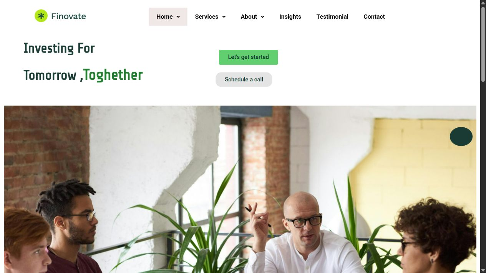

01 / Site vitrineDémonstration
Finovate
Un site de présentation autour des services financiers, avec plusieurs pages et une navigation commune.
Mon travail : Adaptation d’un modèle WordPress, mise en page Elementor et intégration des contenus.
Voir le projet Finovate (nouvel onglet)